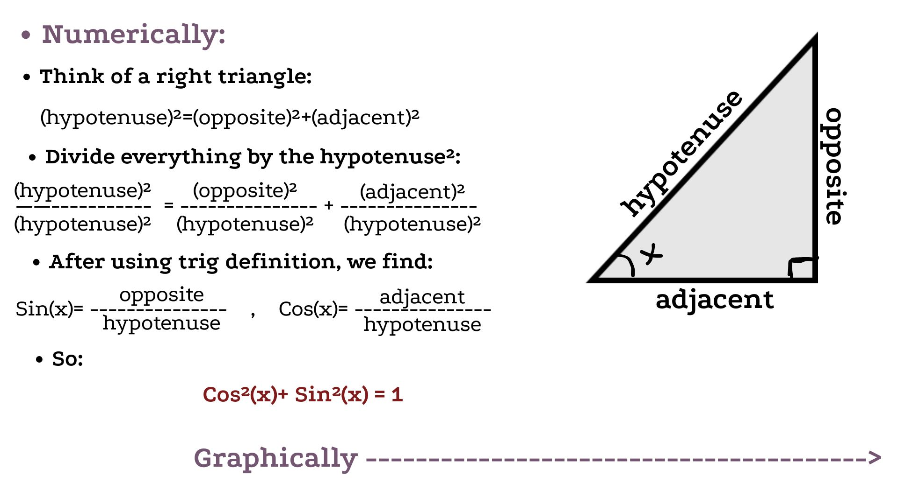
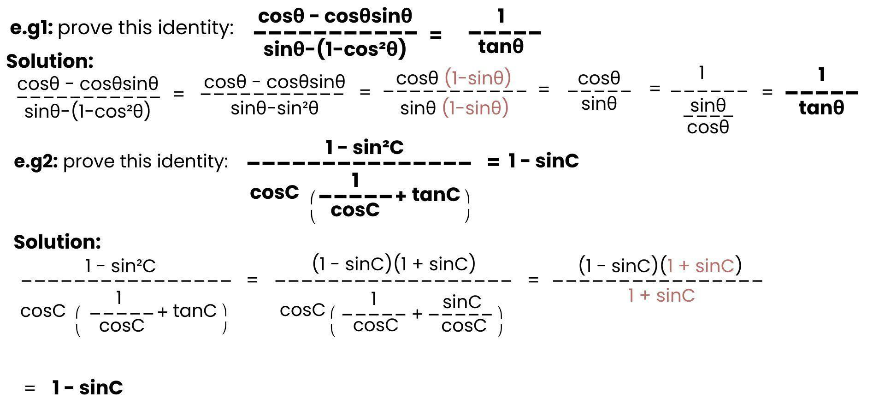

Trigonometry:
Trigonometry is the geometry of triangles and angles because it studies the relationship between them. This image represents a classic example of the relationship between angles and triangles in trigonometry (trigonometric ratios):

The importance of Trigonometry:
Ancient human knowledge of astronomy helped us understand the movement of stars, the moon, and planets. Scientists and astronomers accomplished the calculation the areas of the sky and the approximate positions of celestial bodies. They used trigonometric functions like sine (sin) and cosine (cos) to construct astronomical tables that helped them predict the moon's movements and the changing seasons. This knowledge also contributed to the development of navigation methods using stars for directions in mathematics. In our daily lives, trigonometry remains incredibly important, even if we don't always see it. It's used in building houses and bridges to determine angles and ensure structural stability, and in GPS navigation to accurately calculate directions and distances. It's also involved in the operation of phones, TVs, and the internet. Even in video games and animation, trigonometry is used to animate characters and render them realistically.
Trigonometric functions:
Trigonometric functions are a set of mathematical functions such as sine (sin), cosine (cos), tangent (tan), Secant (sec), Cosecant (csc) and Cotangent (cot), known also as a circular functions; that describe the relationship between an angle and the ratios of sides in a right triangle, and more generally relate angles to coordinates on the unit circle. They are fundamental in mathematics because they model periodic behavior and are widely used in geometry, physics, engineering, and many applications involving waves, oscillations, and circular motion.
Understanding the Identity cos²(x) + sin²(x) = 1:
It comes from the Pythagorean theorem, which relates the squares of the sides of a right triangle and shows that the square of the hypotenuse is equal to the sum of the squares of the other two sides a² + b² = c².

In trigonometry, the identity cos²(x) + sin²(x) = 1 is a fundamental result that can be proven using the unit circle. On the unit circle, every point can be represented by coordinates (cos(x), sin(x)). The radius of the unit circle is 1, so any point (x, y) on it satisfies the equation x² + y² = 1. By substituting x = cos(x) and y = sin(x), we directly obtain cos²(x) + sin²(x) = 1, which confirms the identity geometrically.

Here are two simple practical examples of how this identity and ratios are used:

Trigonometric Identities:
These are the identities that are essential tools in trigonometry because they help transform complex expressions into simpler forms, making it easier to solve equations and prove other identities:
1. Fundamental Identities:
Pythagorean Identities:
These identities come from the Pythagorean theorem and show the relationship between sine, cosine, and tangent.
- sin²(x) + cos²(x) = 1
- 1 + tan²(x) = sec²(x)
- 1 + cot²(x) = csc²(x)
Quotient Identities:
They express tangent (tan) and cotangent (cot) as ratios of sine (sin) and cosine (cos), and simplify trig expressions.
- tan(x) = sin(x) / cos(x)
- cot(x) = cos(x) / sin(x)
Reciprocal Identities:
They show that some trig functions are multiplicative inverses of others and used to rewrite and simplify equations.
- csc(x) = 1 / sin(x)
- sec(x) = 1 / cos(x)
- cot(x) = 1 / tan(x)
2. Even / Odd Identities:
They describe how trig functions behave with negative angles, and are important for graphing and solving equations.
- Even → same value.
- Odd → sign changes.
- cos(-x) = cos(x) (even)
- sec(-x) = sec(x) (even)
- sin(-x) = -sin(x) (odd)
- csc(-x) = -csc(x) (odd)
- tan(-x) = -tan(x) (odd)
- cot(-x) = -cot(x) (odd)
3. Co-function Identities:
Co-functions are pairs of trigonometric functions that are related by
a complementary angle (an angle that adds up to 90° or π/2 radians).
Co-function of x=function of (90° - x) or (π/2 - x).
- sin(π/2 - x) = cos(x)
- cos(π/2 - x) = sin(x)
- tan(π/2 - x) = cot(x)
- cot(π/2 - x) = tan(x)
- sec(π/2 - x) = csc(x)
- csc(π/2 - x) = sec(x)
4. Periodic Identities:
Periodic trigonometric functions are functions whose values repeat in regular cycles. Each has a fixed interval called the period, such as 2π for sine and cosine and π for tangent, over which the pattern repeats.
- sin(x + 2π) = sin(x)
- cos(x + 2π) = cos(x)
- tan(x + π) = tan(x)
- cot(x + π) = cot(x)
- sec(x + 2π) = sec(x)
- csc(x + 2π) = csc(x)